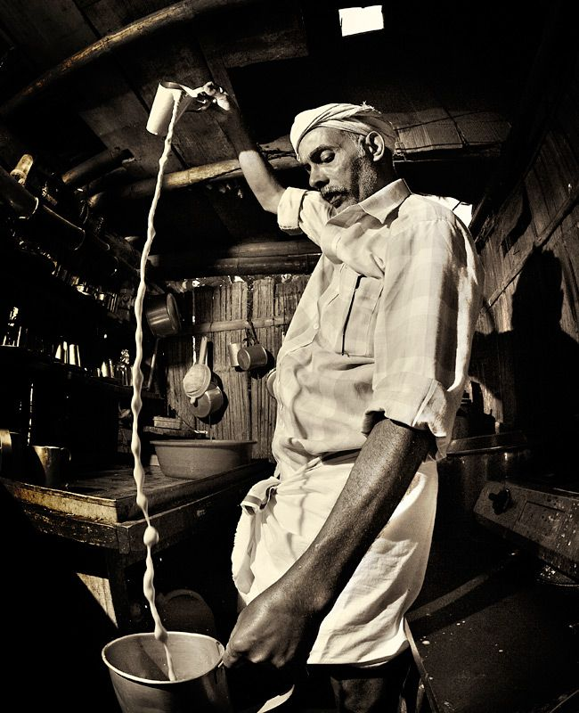

Chayakkada
1983
Not just chaya... it’s an era in every sip.
Chayakadha 1983 is more than just a tea shop. It’s a tribute to the golden days when life was simple, flavors were honest, and conversations lasted as long as the chaya stayed hot. Born from the soul of Kerala’s street food culture, every item we serve — from piping hot kattan to crispy pazhampori and spicy beef fry — carries a taste of that vintage naadan charm. Come sit down. Sip, snack, and relive a taste that time refuses to forget.
